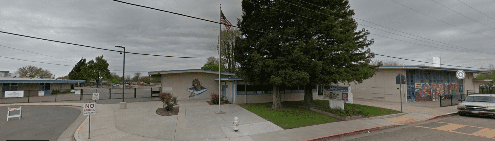

Welcome to Rhoel Villarin Elementary School , where students' progress is always the priority, committed to excelling in academics and preparing students for a brighter future. Home of the Tigers since 1969 , a place where safety, respect, knowledge are always a high standard. At Rhoel Villarin Elementary School, we also build our students to receive the best foundation in sports and physical training.
Welcome, everyone! We wanted to wish you the best year of learning possible. The current pandemic will not hinder us from educating students. Through distance learning and state-of-the-art communication, we give our uppermost support to every student. Our teachers and staff are here for you! Please do not hesitate to call the office at 987-6543 or contact your counselor if you have any questions. Finally, we always envision that Rhoel Villarin Elementary School is a safe place to develop young minds and help the community to move forward and have a brighter future. Students will learn and be respected and supported.
